© 2023 meatfighter.com
This work is licensed under CC BY-SA 4.0


Contents > Applications > TetrominoScript Editor
This tutorial demonstrates the features of TSE by explaining how to construct a NAND gate.
Select or press Ctrl-N:
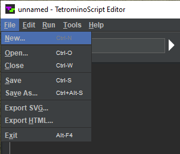
In the New file chooser, navigate to code/ts/examples, enter nandExample.t, and hit :
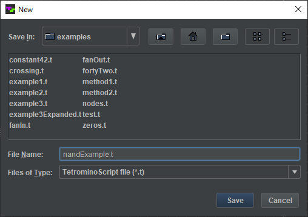
The window regions reset, and nandExample appears in the title bar:
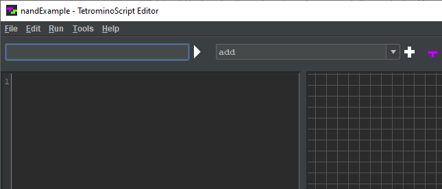
Turn the scroll wheel to adjust the grid cell size to 32:
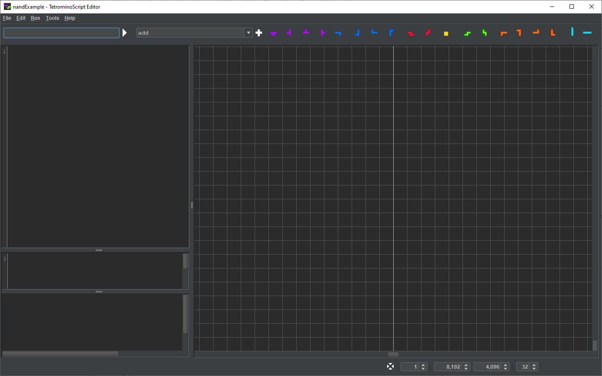
The goal is to build the following circuit.
It will be constructed bottom-up, starting with the input nodes.
Type “in a” into the TS program region:
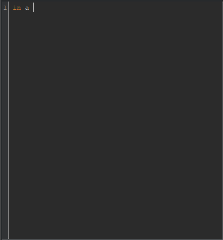
Click on grid cell −2:0:
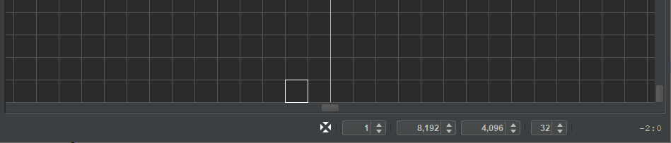
That transfers the cell coordinates to the TS program:
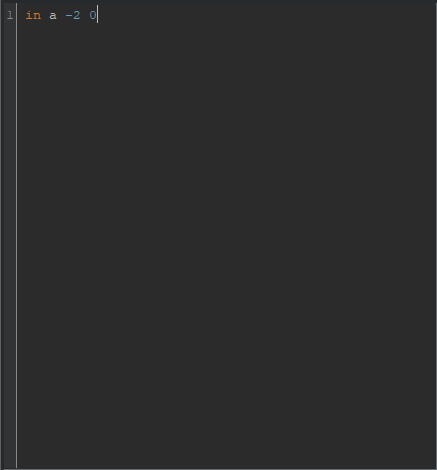
Press Enter. Type “in b”. Click on cell 1:0:
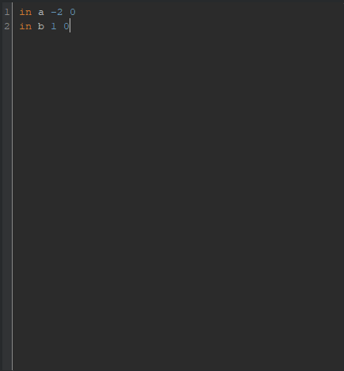
Click on the input field. Type “01”:
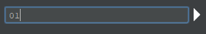
Press the Run button.
The input nodes appear in the playfield. Their states correspond to the input bits:
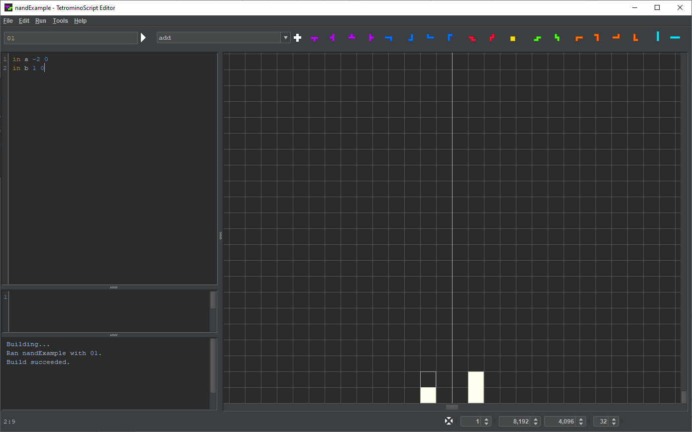
Note: TSE assigns the input nodes to the bit values from left to right regardless of order that the TS program defines them. Also, for readability, bit strings with many digits can be partitioned into nibbles or arbitrary group sizes by using spaces as separators.
In the TS program, make sure the cursor is positioned at the end of line 2 or at the start of line 3. Click on the components combo box. Type “notLeft”:
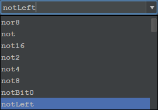
Press the Add button. Move the mouse cursor into the playfield:
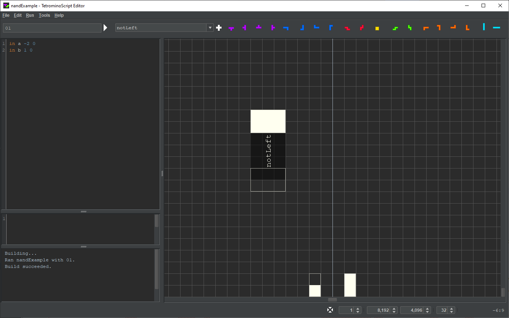
TSE depicts notLeft as a dark rectangle. An unassigned input node protrudes from its bottom. An output node assigned 1 extends from its top.
Node a will serve as notLeft's input node. Overlap the nodes thusly:
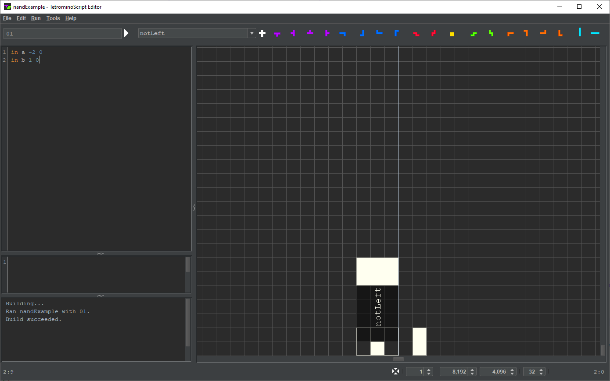
Click the left mouse button.
TSE appends notLeft to the TS program:
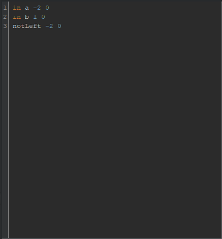
Note: While positioning a component, the right mouse button or Esc deselects the component. Also, if a component is put in the wrong place, edit its coordinates in the TS program and press the Run button to update the playfield.
In the TS program, make sure the cursor is positioned at the end of line 3 or at the start of line 4. Click on the components combo box. Type “notRight”:
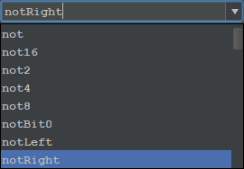
Press the Add button. Move the mouse cursor into the playfield. Overlap node b and notRight's input node:
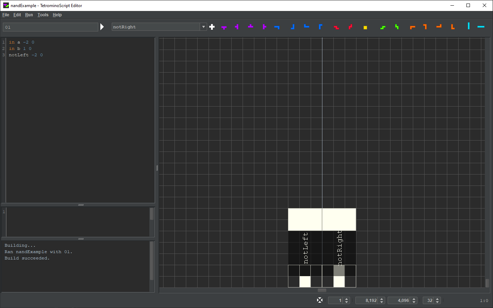
Click the left mouse button.
TSE appends notRight to the TS program:
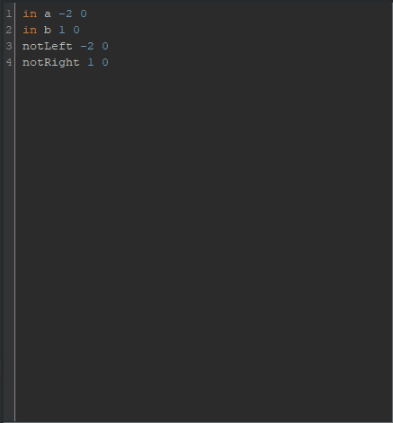
Note that the inverters' input and output nodes are in opposite states:
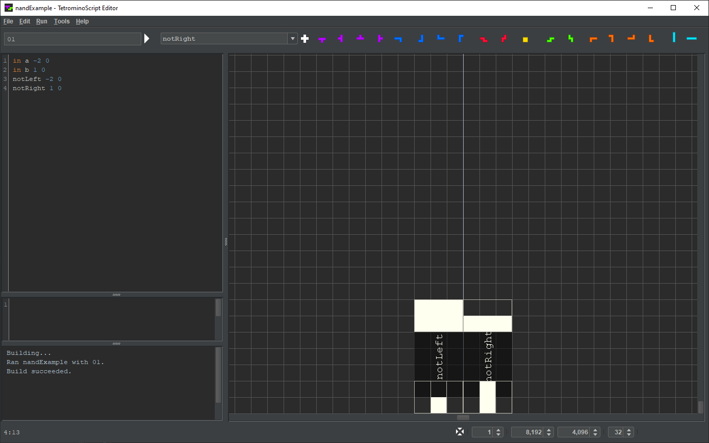
Set the rendering depth to 2 by adjusting the leftmost spinner on the status bar:
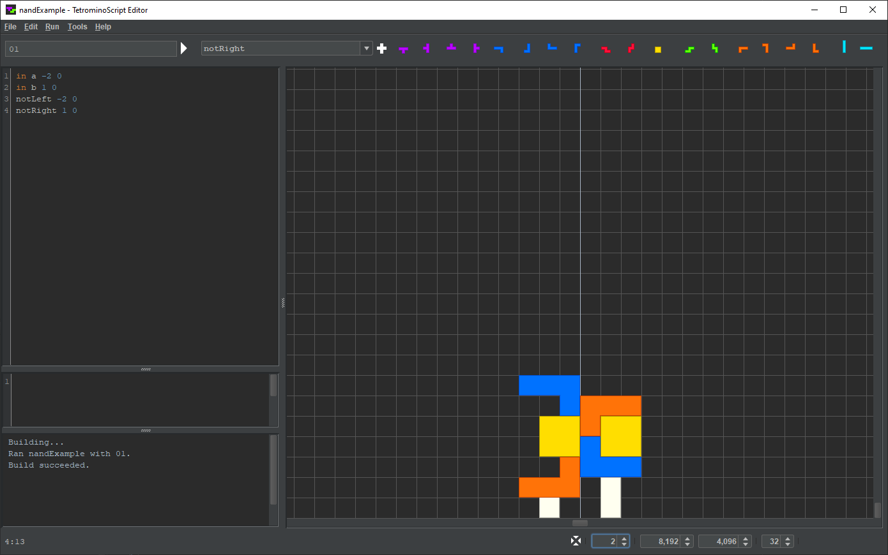
At that rendering depth, TSE reveals the inner workings of the inverters.
Both input nodes should be three cells wide. Edit them as follows.
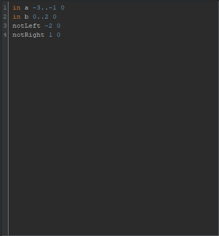
Press the Run button:
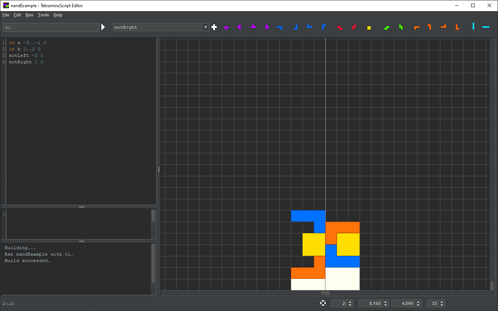
A TS program can label its components. Type “not1” immediately right of notLeft. Type “not2” immediately right of notRight:
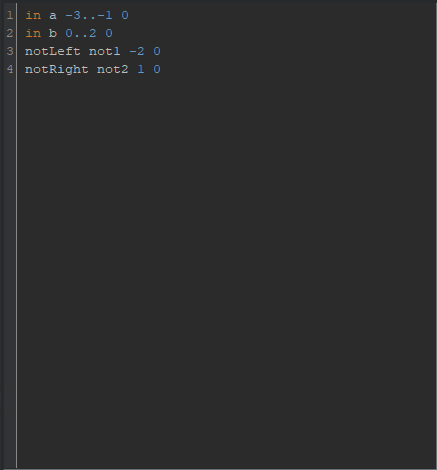
Set the rendering depth back to 1. Press the Run button:
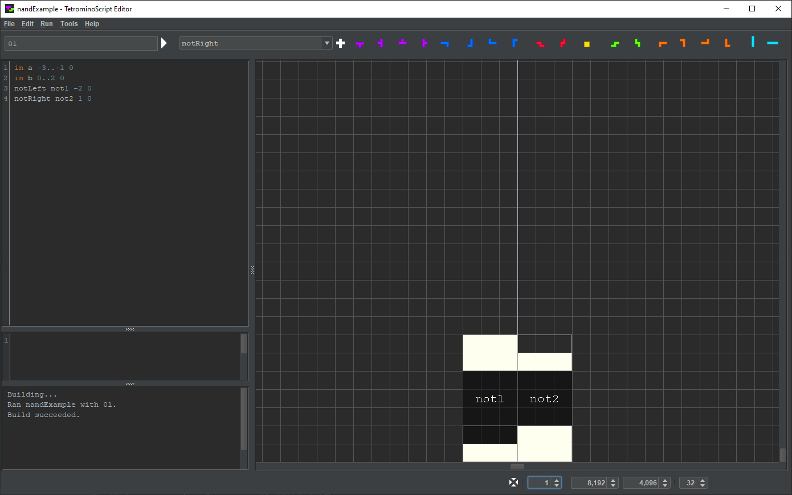
In the TS program, make sure the cursor is positioned at the end of line 4 or at the start of line 5. Click on the components combo box. Type “or”:
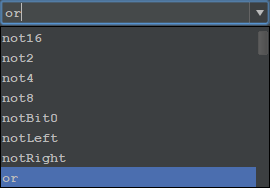
Press the Add button. Move the mouse cursor into the playfield:
TSE depicts or as a dark square. Two unassigned input nodes protrude from its bottom. An unsigned output extends from its top.
The output nodes of the inverters will serve as the input nodes of the OR gate. Overlap the nodes thusly:
Click the left mouse button.
TSE appends or to the TS program:
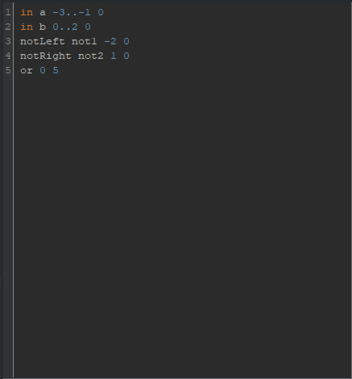
The OR gate's output node will serve as the output of the NAND gate.
Press Enter. Type “out o -1..0 7”:
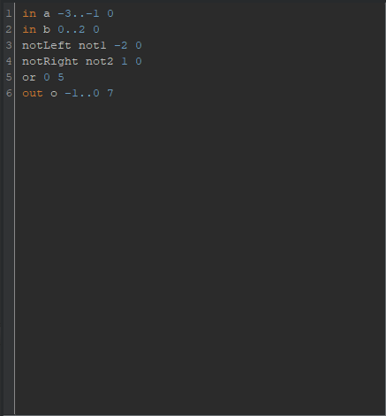
Click on the input field. Type “11”. Press the Run button:
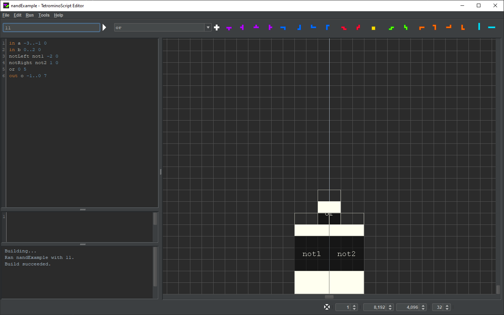
Repeat for all possible input values. Verify the output is 0 only when both inputs are 1.
In the JavaScript region, type in the following snippet.
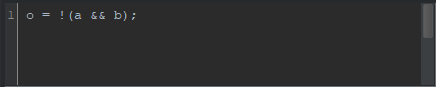
Select or press Shift-F6:
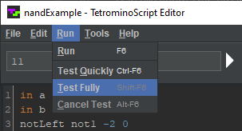
That causes TSE to compare the NAND gate's output with the value from JavaScript snippet for all possible inputs. They match:
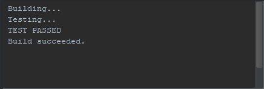
Click on line 4 of the TS program. Press Ctrl-/ to comment out the line:
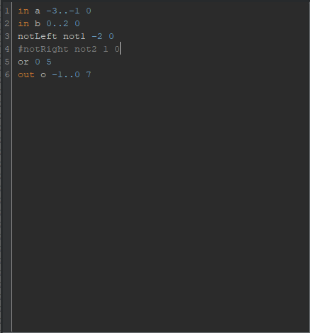
Press Shift-F6 to test again. With the missing inverter, the test fails:
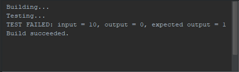
Click on line 4 of the TS program. Press Ctrl-/ to uncomment out the line.
Verify the NAND gates works once again.
If a circuit has a large number of inputs, may take several minutes to complete. And since TSE parallelizes testing, it consumes 100% CPU during that period.
The alternative, or Ctrl-F6, compares the circuit’s output with the JavaScript for a randomly selected subset of the possible input values. It covers only 10% of the testing space, enabling it to finish 10× faster.
To terminate a long-running test, select or press Alt-F6.
TSE recursively renders a circuit to a specified cutoff depth. At the cutoff, it assigns output nodes by evaluating JavaScript snippets. Meaning, not only does it display less detail, it simulates less detail. Consequentially, the lower the depth, the faster the render.
To make this clear, set the rendering depth to 0:
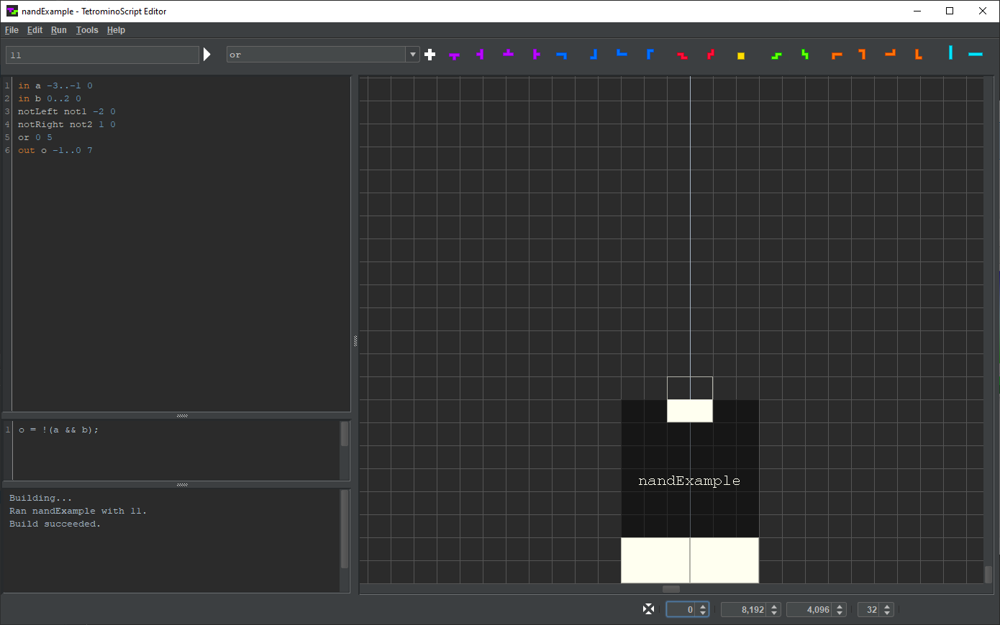
TSE assigns the output node by evaluating the JavaScript snippet rather than simulating nandExample's unseen internals.
Set the rendering depth to 1:
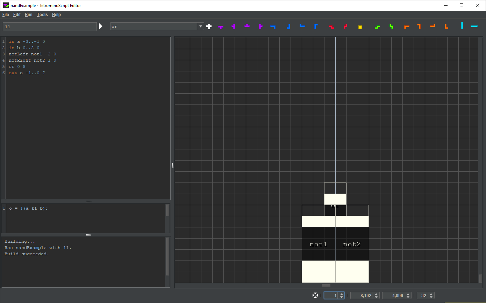
TSE assigns the output nodes of the inverters and the OR gate by evaluating their JavaScript snippets rather than simulating their unseen internals.
Set the rendering depth to 2:
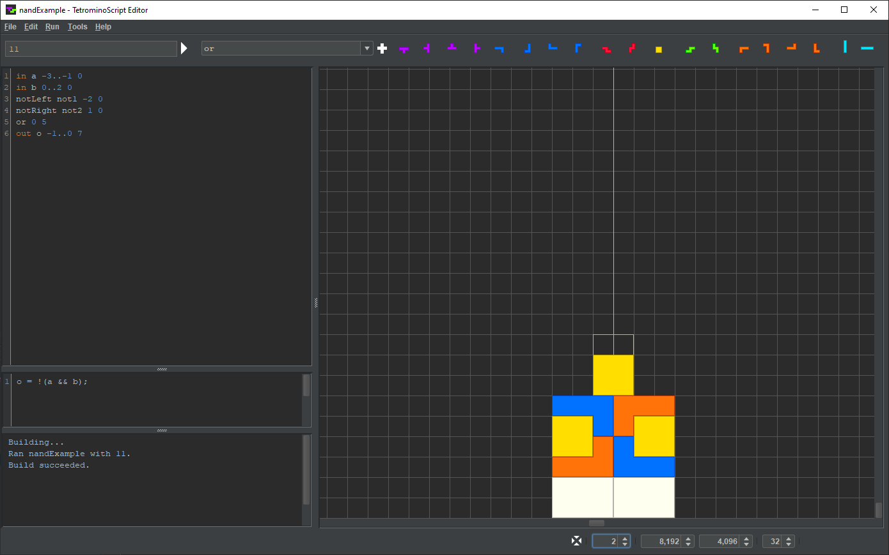
At this rendering depth, TSE fully simulates everything. It ignores the JavaScript snippets.
Select or press Ctrl-S.
TSE saves components as two separate files. In this case, it writes the TS program to code/ts/examples/nandExample.t and the JavaScript snippet to code/ts/examples/nandExample.js.
All files within code/ts, in any subdirectory or otherwise, are part of the components catalog.
That completes the NAND tutorial.
© 2023 meatfighter.com |